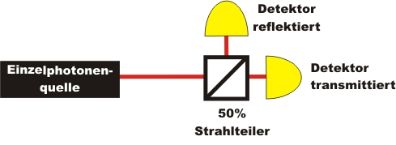

Beweis der Existenz des Photons
Übersicht
Besteht Licht aus unteilbaren Portionen? Existiert das Photon als Quantenobjekt? In diesem Abschnitt soll die Existenz des Photons als unteilbares Quantenobjekt bewiesen werden. Der Beweis erfolgt zunächst auf Schulniveau mit blinkenden Lampen. Auf Universitätsniveau erfolgt der Beweis mit kontinuierlicher Datenrate und der Korrelationsfunktion zweiter Ordnung. Als graphischer Zugang zur Existenz des Photons wird die Photonenstatistik experimentell ermittelt. Die Anwendung dieses Grundlagenexperimentes ist der Quantenzufallsgenerator (siehe Quantenzufall).
Kapitel 1: Existenz des Photons für die Schule Kapitel 2: Existenz des Photons für die Universität Kapitel 3: Photonenstatistik bis n=2 für die Universität

Beweis der Existenz des Photons als Quantenobjekt am Strahlteilerwürfel